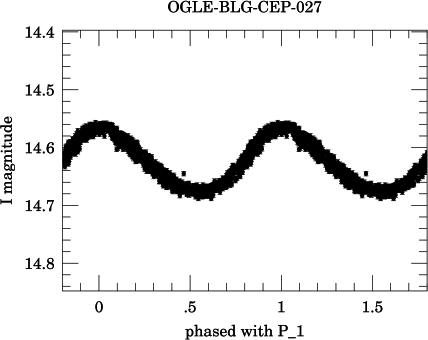
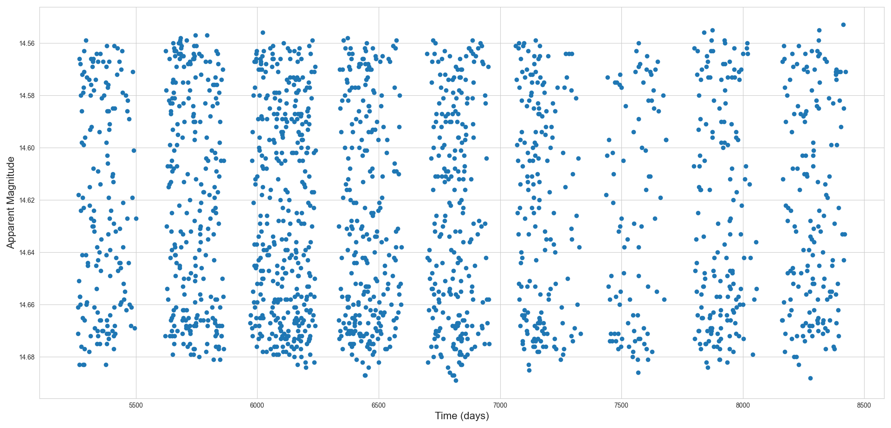
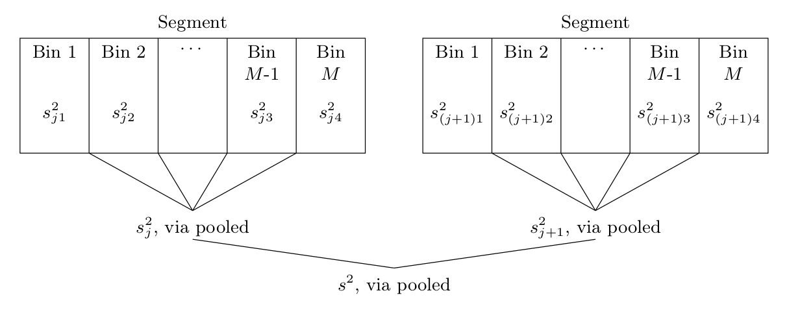
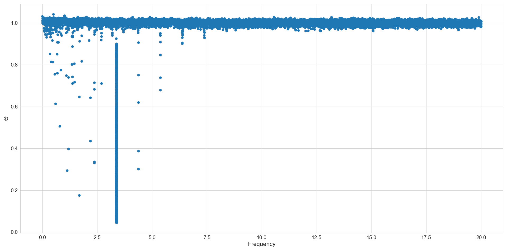
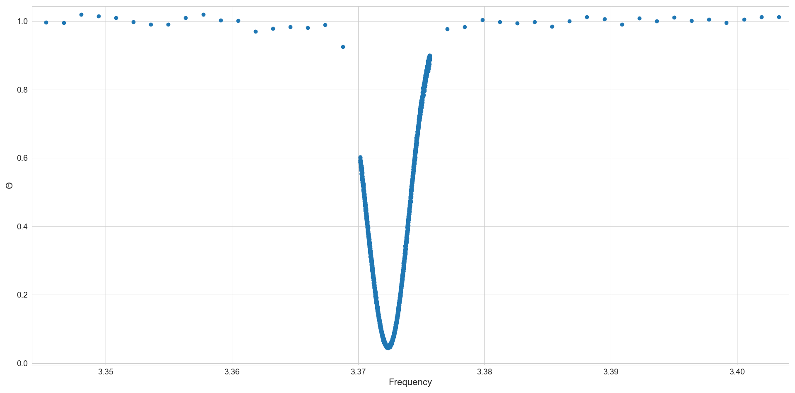
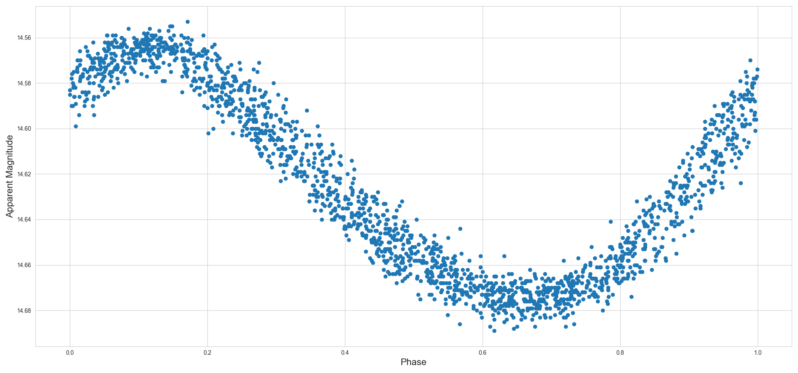

GitHub Repository (contains installation instructions)
Language: FORTRAN 2008
Phase dispersion minimization takes a time series data set and finds a period such that the folded data set will be as "clean" as possible, for some definition of "clean." A classic example is Cepheid variable light curve folding where observations are spread out over thousands of days. For instance, below is a folded light curve of OGLE-BLG-CEP-027 using the period $P_0 = 0.2965282$ days. The original data set was over 1800 observations over the course of 3000 days.

The tricky part is computing the period very precisely so we can actually fold the light curve. To do this, we use Stellingwerf's algorithm (full paper).Let the observations be in the form $(t_i, m_i)$ where $t_i$ is the time in days and $m_i$ is the apparent magnitude. If there are $N$ observations, then $$\sigma^2 = \frac{\sum (m_i - m)^2}{N-1}$$ is the variance of the entire set. If we bin these $N$ observations into $M$ (possibly non-disjoint) bins with $n_j$ elements and variance $s_j^2$, then the pooled variance $s^2$ is $$s^2 = \frac{\sum (n_j-1)s_j^2}{\sum n_j - M}.$$ We construct our bins by taking all times $t_i\pmod \tau$ where $\tau$ is some trial period and then binning accordingly.
We now define the ratio $\Theta = s^2 / \sigma^2$. If our trial period is off by even a small amount, there will be substantial scatter in the folded light curve and thus we'd expect $\Theta$ to be near unity. However, if we've selected a $\tau$ that is sufficiently close to the true period, then the scatter will be substantially less than thus $\Theta$ would be near zero.
Clearly, the efficiency of this approach is (in part) governed by the number of trial periods $\tau$ we use. We thus sample at Nyquist frequency $\Delta f = \tfrac{1}{2 T}$ where $T$ is the total time interval of observations.
Even with our bound for the frequency interval, we still have a huge amount of possible periods to test. For instance, suppose in our example of OGLE-BLG-CEP-027 that we wanted to have a maximum frequency of 20 per day. With $T = 3000$ days, we'd have 120,000 different trials. However, we can substantially accelerate this using a segmentation process briefly described in Stellingwerf (2011). We take advantage of the natural segmentation in the observations, as shown below.

We split our dataset into $n_s$ observation and apply Stellingwerf's method to each of these independently, with our frequency step letting $T$ be the width of the widest segment. We can then combine these through variance pooling and finally compute our $\Theta$ parameter at the end. A handy illustration for $M=5$ bins follows.

Intuitively, segmentation works because it makes an error in the period guess less catastrophic. For large $T$, any error would get magnified when taking the periods modulo $\tau$, and thus would create huge scatter in the final folded light curve. Segmentation allows for smaller, independent segments, and thus allows a wider range of errors.
After we've run through our first scan, we'll have a set of $\Theta$ and their associated $\tau$. However, we're not guaranteed to have found the period precisely just yet. To do this, we initialize a secondary scan to better constrain the dip in the periodigram. In this case, an illustration tells more.


Yes, it does.
The program does a decent job of finding the correct period, though there is still some discrepancy between the "accepted" period and ours. In the case of OGLE-BLG-CEP-027, we find a $P = 0.2965302 $ days, compared to $P_0 = 0.2965282$ days. Our folded light curve follows.
